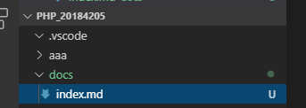

-docs 폴더 생성 뒤 폴더 안에 index.md 파일 생성한다.

- git bush 창에 git status를 입력하면 아직 적용 되지않은 것을 알 수 있다.

-활성화를 하기 위해선 git add . 을 하면 해당 모든 파일이 git 으로 적용된 것을 알 수 있다.

-만든 index.md 파일을 commit을 통해 추가한다.

-commit 을 할 때 에러가 발생할 수 있는데 이때는 git push을 하여 다시 commit 해준다.

-Github에서 활성화 해보기 (Github page)

-